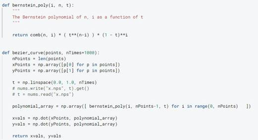

CS184 Final Submission
Parallelized
Bezier Curve Font Rendering
Due Saturday, May 14th, 11:59pm.
Group 47: Vincent Chiang, Alek Kozminski, Anderson Lam, Amy Huang
Link to this Webpage: https://amyxjhuang.github.io/cs184-final/final.html
Link to Video: https://drive.google.com/file/d/1eQBvH7R4Mq109xdnhyH4gAxCGupiFaly/view?usp=sharing
Abstract
In this project, we will implement a Bezier-Curve based font renderer. We do this by accepting a desired font file and using a Python package to read the character glyphs, points, and contours. Once those values are processed, we are able to create SVGs that we can render and rasterize. In addition, we provide functionality to generate fonts from SVGs (thus creating fonts from modifying loaded fonts).
We planned to make this renderer fast by parallelizing it on the CPU through use of the OpenMP library, and on the GPU through use of CUDA.
We chose font rendering for our project as it is interesting and was a prominent problem before. There are many ways to render fonts and with this, there are many tradeoffs (aliasing, not scalable, etc) when choosing a font rendering technique. With Bezier curve font rendering it allows us to efficiently represent characters that can be anti-aliased and scaled using curves that represent the outlines. In addition, we will parallelize this in order to make it even faster than traditional font rendering. This task is important because it is used frequently in our high-tech world and serves as building more knowledge. This will be challenging for us as this problem requires us to gather a deeper understanding of how font files work (finding the right packages to help us), how bezier curves work, and how to render it all without the guidance of course staff. We will solve this problem by understanding how font files can be loaded then find ways to draw Bezier curves from that information. From there, we aim to figure out how to speed up rendering.
Technical Approach
Progress summary:
● Created function that takes in a character and TTF file to bzc file (to run in project 2)
● Created function that takes in text and TTF file to svg files (to rasterize in project 1)
● Created a TTF file to SVG convertor in two ways, one with matplotlib plotting, another with svgpathtools package
● Generate TTF files from modified font glyph data and SVGs
● Generated filled-in SVGs
● Attempt at rasterization and bezier curve plotting speed up
● SVG path element rasterizer in project 1
To implement our text renderer in Python we used Deepnote to collaborate and host our files. We used the Python package FreeType to extract the points and information of each character in our downloaded TTF files. We chose to use Python as the packages available for C++ were limited. We first attempted to modify project 1 and 2 code to accept new parameters and then read the TTF files, but it was also much more complicated than anticipated.
Using the package, we were able to gather the correct points and contour values and then generate bzc files that are compatible with our project 2 code. Then we parsed through the TTF file to find the position of the character we are looking for, and iterated through the points and plotted it with our Bezier curve implementation. We also attempted to speed up our bezier curve plots through NumS, a numpy package that reduces processing times by parallelizing numpy computations. We generated our svg files in two ways. One way was using the plot and saving it as an svg and the alternative way was using the svgpathtools package in order to generate an svg.

Character Bezier Curve High-Level Pseudocode:
● Take in desired size, font, color, character
● For each other the characters contours
○ Read point metadata (point tag data)
○ If point metadata is valid, then generate curve
○ If point is the last one, connect it with the first point as well
We ran into several bugs in how many separate curves to render, but after we were then able to output an outline of each word, and calculated an offset for spacing purposes (to show multiple characters in a plot). We tried iterating through the pixels to render the filled letters, but due to runtime in python we ended up using matplotlibs fill_between method to fill in each character given any lines.
We also implemented functionality to generate font files from custom glyphs. We do this by reading in an SVG of the new character and using the FontForge package in order to render a TTF file. This functionality is useful for when we modify control points to make custom fonts.
Sample code to create new font from new SVG data:
|
import fontforge font = fontforge.open('blank.sfd') glyph = font.createMappedChar('A') glyph.importOutlines(new_A_character.svg') font.generate(new_font.ttf') |
Another aspect we worked on was rendering the svg on project 1 code. We realized that the project 1 code did not support rendering svg path elements. One way to implement this is a winding number approach as highlighted in this document (https://digitalrepository.unm.edu/cgi/viewcontent.cgi?article=1062&context=cs_etds).
Other options we looked into include using an online converter of svg path elements to polygon or circle elements as well as other developed public libraries that we can use to perform such conversion. Most of these methods did not generate a file that could be used in our project code. Those that did had different trade-offs in terms of file size versus quality. We then passed the ones that worked into the project 1 rasterizer.
Finally, we looked into project 1 rasterization speed-ups through parallelization. We tried a couple of parallelization strategies using the OpenMP library.
First, we tried parallelizing the rasterization of the pixels enclosed by path elements (so processor 1 would rasterize pixel 1, and processor 2 would rasterize pixel 2, and each would pick another pixel to rasterize after finishing). Unfortunately, this approach did not perform well, as the parallelization overhead would often beat the advantage it provided. We believe that, were we rasterizing larger images (with many more pixels), we would start to see the parallelization advantage more clearly, as the rasterizing of pixels would be a comparatively larger fraction of the work, and the parallelization would become more and more negligible. However, fonts are typically not rendered at large sizes, so we were not sure whether this parallelization was worth the cost for small images. This approach may be improved by more careful loop parallelization, such that each processor could take advantage of the spatial locality of the pixels stored in the same cache line. However, we decided to move to a different approach.
Our next approach was to try distributing the rendering of each svg element (so processor 1 would entirely process the first <path>, processor 2 would process the next <path>...). We found that this approach scaled much better than the previous approach, and, for svgs with many large paths, definitively outperformed the non-parallelized renderer. However, we found that, running on our personal computers, main-stream font rasterizers like the TrueType rasterizer still rendered large bodies of text faster than our renderer.
Additionally, our renderer has the problem if a user might desire to render overlapping text of different (solid, non-translucent) colors, locks may be required such that the elements would not be rendered in the wrong order, causing the wrong letter to appear to be on top of the pile of letters. A locking scheme to prevent this problem would have to have several locks on areas of the image, potentially causing blocking between different processors. (More granular locks may cause less blocking but may instead cause slowdown due to the number of locks required.)
Our project pipeline is organized by a bash script and is as follows:
.ttf files, desired text -> svg file -> rasterized
When we ran into problems, we were quick to tackle them and branch off to different ideas. We were able to collaborate efficiently. For example, when we found it hard to use C++ to read our TTF files, we pivoted to using Python instead. We also consulted each other regularly.
Overall, we learned that reading, using, and generating TTF files is harder than it seems and there arent many options to do so in Python or C++. We understood at a deeper level how SVGs are parsed and rasterized in project 1, as we needed to implement our own font path rasterizer. From this, we adapted project 1 and 2 for our own uses and explored the many ways that rasterization can be sped up. We also learned a lot about how we collaborate and what kind of graphics problems we enjoy doing. Should future students want to work on a similar project, there is more room to explore further speedup and extended customizability of fonts using .bzc files.
Results
Render in Project 2 code from generated bzc file
Plot of all points for some letter. Bezier curves are incorrectly calculated and connected.
Correctly generated and
rendered text from calculating correct bezier curves
Using matplotlibs fill_between function to attempt to fill in text
We plotted the strong scaling efficiency () of our renderer on a few of the svgs we generated, and achieved the following scalings using the two approaches discussed in our technical approach section (Approach 1 = pixel parallelization; Approach 2 = element parallelization):
References
|
Resource |
Source/Notes/Details |
|
Font TTF files |
https://www.fontsquirrel.com/fonts/list/popular https://all-free-download.com/font/ |
|
Using TTF files |
|
|
How fonts are modeled with bezier curves |
● The Mathematics behind Font Shapes https://jdhao.github.io/2018/11/27/font_shape_mathematics_bezier_curves/ ●
GPU-Centered Font Rendering
Directly from Glyph Outlines |
|
Hive machines (or LNBLs Cori, if we can class accounts for it) |
https://hivemind.eecs.berkeley.edu/ |
|
OpenMP |
https://www.openmp.org/wp-content/uploads/OpenMPRefCard-5-2-web.pdf |
|
CUDA |
|
|
Paper on GPU font rendering |
|
|
Potential package to load ttf |
|
|
Doc on font rasterization |
|
|
Font rendering for GPU |
https://digitalrepository.unm.edu/cgi/viewcontent.cgi?article=1062&context=cs_etds |
Contributions from each team member
The teamwork aspect of this project was dealt with by assigning people to different roles depending on which phase of the project we were working on. In the beginning (i.e. the proposal period), each of us were responsible for coming up with different ideas and the feasibility of those ideas. We then came together and made the final decision, going over each and single one of the project ideas.
Next, we were all assigned to work on researching different parts of the project with each member having a specific task. Anderson was assigned to research on handling TTF files, answering questions such as how they work, how we can use them, and what research out there can help us with the goal in hand. Amy researched the generation of svg and bzc files that could be used alongside our Project 1 and Project 2 code and figured out how the character points can be created from bezier curves. Vincent researched the limitations of our old project code and what additional tools are needed for our plan to work. Alek researched the parallelization part of the project, what we can do to speed up the existing project code.
Continuing on that, we worked on the coding of the parts each of us researched on. We had weekly meetings to check in on the progress and debrief on any problem each member has run into. We then helped each other with their issues and discussed next steps. Overall, each member did their part of work in a timely and responsible manner.